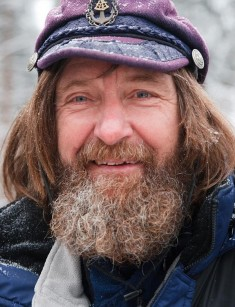

Последние достопримечательности
Колизей
Амфитеатр, памятник архитектуры Древнего Рима, наиболее известное и одно из самых грандиозных сооружений Древнего мира, сохранившихся до нашего времени.Италия, Рим. Подробнее
Эйфелева башня
Металлическая башня в центре Парижа, самая узнаваемая его архитектурная достопримечательность.Франция, Париж. Подробнее
Пизайнская пашня
Колокольная башня, получившая всемирную известность благодаря непреднамеренному наклону.Италия, Пиза. Подробнее
Об авторе

Фёдор Фили́ппович Ко́нюхов (род. 12 декабря 1951, село Чкалово, Запорожская область,
Украинская ССР) — советский и российский путешественник, писатель, художник, священник Украинской
православной церкви (Московского патриархата).
Совершил пять кругосветных плаваний, 17 раз пересёк Атлантику, причём один раз на вёсельной лодке.
Первый россиянин, побывавший на всех Семи вершинах, в одиночку на Южном и Северном полюсах (т. н.
Explorers Grand Slam[en]). Обладатель национальной премии «Хрустальный компас». Обладатель мировых
рекордов Гиннесcа.
Окончил профессионально-техническое училище № 15 города Бобруйска (ныне Бобруйский государственный
профессионально-технический художественный колледж) по специальности резчик-инкрустатор, Одесское
мореходное училище (судоводитель), затем Ленинградское арктическое училище (судовой механик). Обучался в
Санкт-Петербургской духовной семинарии.
Первую экспедицию осуществил в 15 лет — пересёк Азовское море на вёсельной лодке. В 1989 году принял
участие вместе с младшим братом Павлом в советско-американском велопробеге Находка-Ленинград. C 1998
года — заведующий лабораторией дистанционного обучения в экстремальных условиях (ЛДОЭУ) в Современной
гуманитарной академии (Москва).
К 2016 году совершил более 50 уникальных экспедиций и восхождений, выражая своё видение мира в картинах
и книгах. В 1983 году принят в Союз художников СССР (самый молодой на тот момент). С 1996 года — член
Московского союза художников (МСХ), секция «Графика», с 2001 года также состоит в секции МСХ
«Скульптура». Автор более трёх тысяч картин, участник российских и международных выставок. С 2012 года —
академик Российской Академии художеств. Автор 18 книг, член Союза Писателей России.